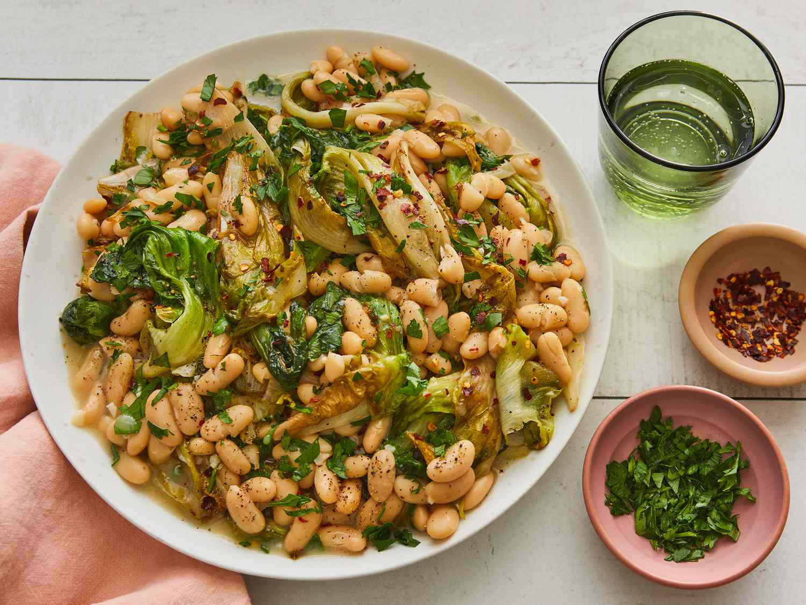

Salad

Recipe Description:
Escarole and beans is a classic Italian dish that features tender escarole, a slightly bitter leafy green,
sautéed with creamy cannellini beans. Often cooked with garlic, olive oil, and a hint of red pepper flakes,
this simple yet hearty dish is typically served as a soup or stew. It's a comforting, nutritious meal that's
rich in fiber and flavor, perfect for a wholesome lunch or dinner.
ingredients:
- 3 tablespoons olive oil, divided
- 2 large heads escarole
- salt and pepper to taste
- ¼ teaspoon crushed red pepper flakes
- 1 clove garlic, minced
- 2 (16 ounce) cans cannellini beans, undrained
- 3 sprigs fresh parsley, chopped
Steps:
- Gather all ingredients.
- Heat 2 tablespoons olive oil in a large skillet over medium heat. Toss in escarole, turning to coat with oil.
Season with salt, pepper, and crushed red pepper flakes. Cook, stirring occasionally, about 10 minutes, or until tender.
- Heat remaining 1 tablespoon olive oil in a separate skillet over medium heat; stir in garlic. Pour in beans with juice and
simmer until creamy, about 10 minutes.
- Stir in escarole and parsley; simmer 10 minutes more.